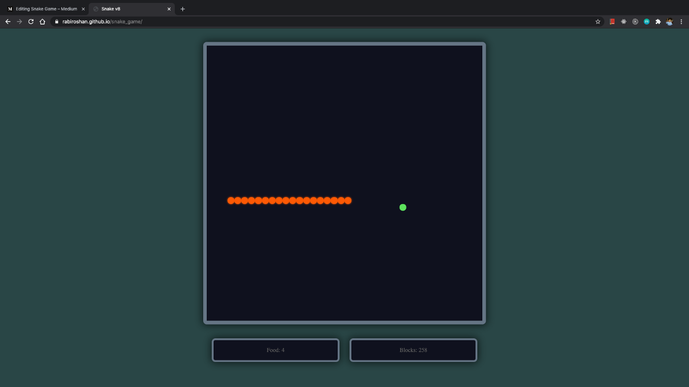
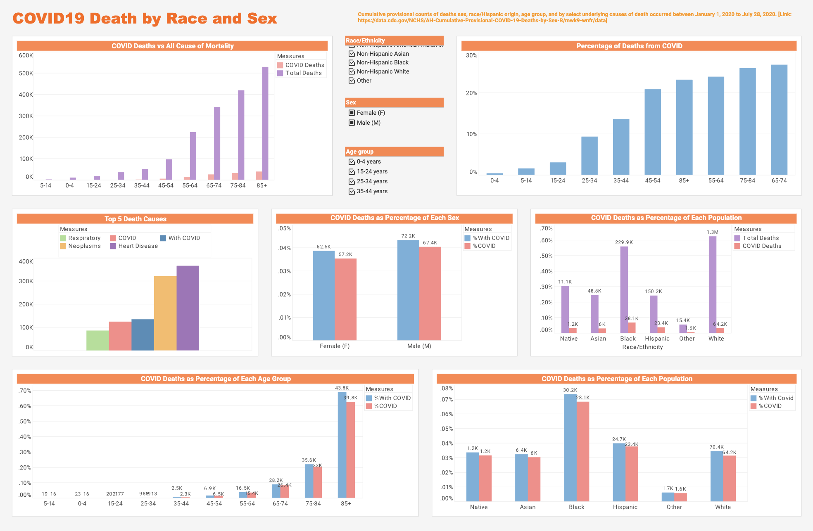
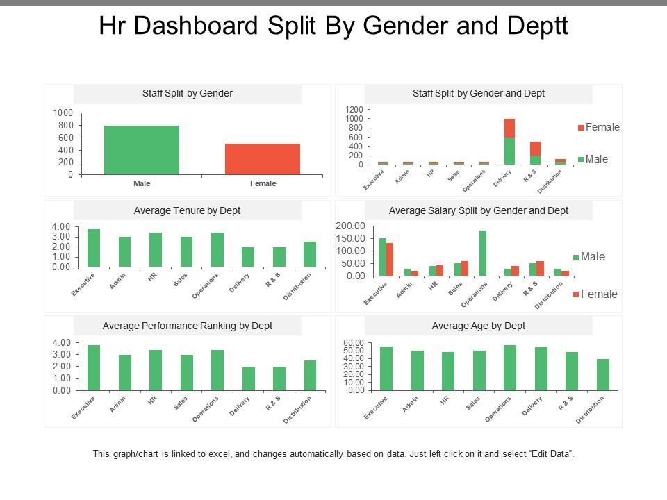
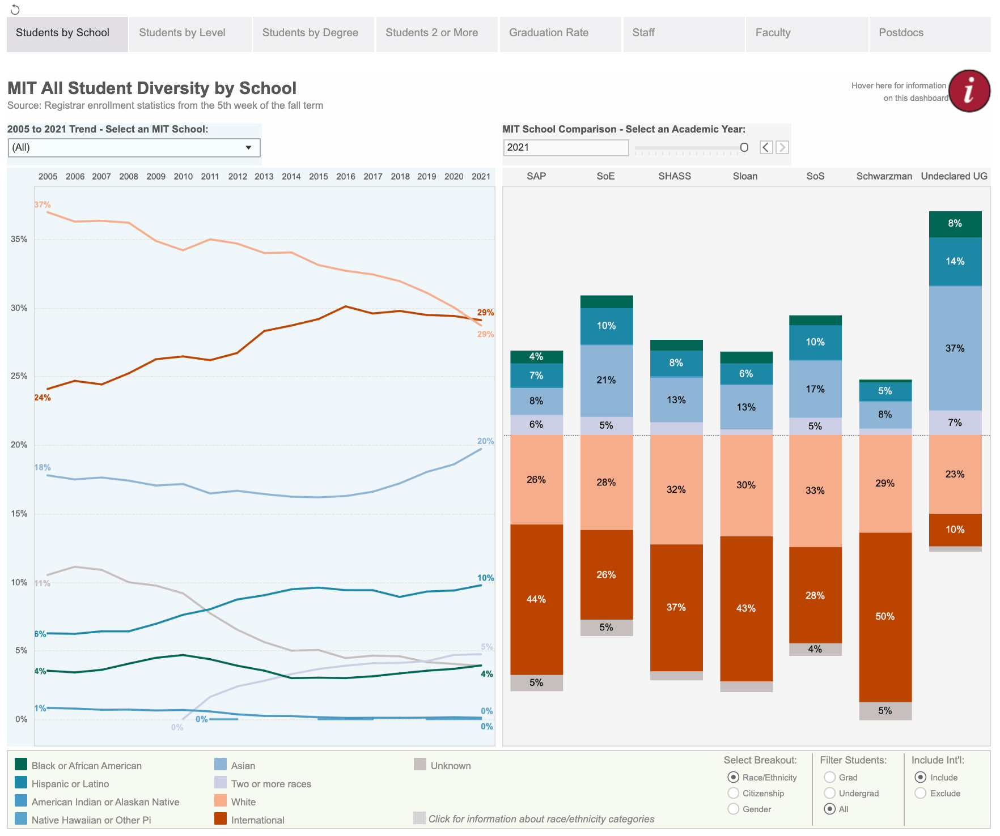

Now, let me explain the projects in detail.
Click side arrow to see the slides.Snake Game.
Using python definition function cutting down the programming Creating separate definition for Body, Movment, Food-collide, increase-length, Wall-collide, Score-board made more easier to under the working and using python Turtle for GUI ,
Turtle Racing
Using python programming build an turtle race using definitionfunction and Python Turtle Graphics, Importing Random module, Screen for moment of turtle and display Creating a separate definition for Turtle, moment , first-touching the wall, creating an score borad

Turtle Crossing
Using python programming build an turtle Crossing using definitionfunction and Python Turtle Graphics, Importing Random module, Screen for moment of turtle and display Creating a separate definition for Turtle, moment , first-touching the wall, creating an score borad,random moment of objects,aligning an Keys for moment of turtle.

Ping Pong Game
Using python programming build an PPing-Pong game using definitionfunction and Python Turtle Graphics, Importing Random module, Screen for moment of turtle and display Creating a separate definition for moment of paddles, colliding with ball , ball-touching the wall, making two paddle as Player-1 & Player-2, Create an score-board

Records of Death due to COVID-19
Python pandas(Using colab, Matplotlib for graphs, charts, reprot, storing it in data base), manipulating and exploration by writing querys using Mysql and pyhton and also droping it inside Tableau for reports and Visualization and Creating an Dashborad.
 Data-analysisDifference in female & male salary
Python Pandas(Using google collab, Matplotlib for graphs, charts, reprot), storing it in data base,manipulating and exploration by writing querys using Mysql and pyhton and also droping it inside Tableau for reports and Visualization and Creating an Dashborad.
 Data-analysisEmployment Opportunity
Python Pandas(Using google collab, Matplotlib for graphs, charts, reprot), storing it in data base,manipulating and exploration by writing querys using Mysql and pyhton and also droping it inside Tableau for reports and Visualization and Creating an Dashborad.
 Data-analysisVideo Games sales
Storing in data base,manipulating and exploration by writing querys using Mysql(Use joins for multiple data connections for sales, listening, Review) and pyhton and also droping it inside Tableau for reports and Mapping ,Visualization and Creating an Dashborad.
Data-analysisStarbucks Location worldwide
Storing in data base,manipulating and exploration by writing querys using Mysql(Use joins for multiple data connections for states, city, pincode) and pyhton and also droping it inside Tableau for reports and Mapping, Visualization and Creating an Dashborad.
 Data-analysis
Data-analysis